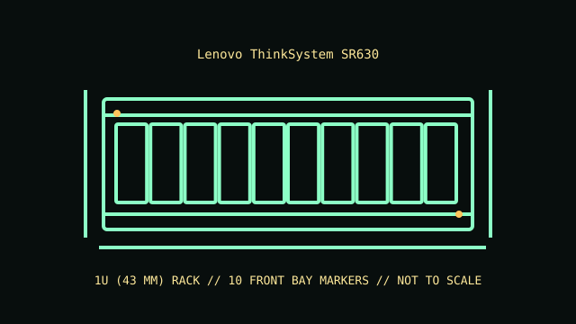

[ MODEL IDENTIFICATION // THINKSYSTEM SR630 // FIRST-GENERATION 1U SERVER ]
Lenovo ThinkSystem SR630
1U (43 mm); 43 × 434 × 772 mm (H × W × D, chassis); rails and optional cable-management arm add installation depth. Confirm rack depth and rear cable bend clearance.

REVISION CAVEAT: The original SR630 is not the SR630 V2 in the existing catalog. Verify machine type/model (MTM), system-board generation and bay/backplane SKU before fitting parts.
Specifications & fit
| Catalog subcategory | Rack server enclosures |
|---|---|
| Model / board and backplane | Lenovo dual-socket Xeon Scalable system board with front drive backplane options. Backplane/cabling and installed RAID/HBA determine SAS/SATA/NVMe support. |
| Rack height / dimensions / rails | 1U (43 mm); 43 × 434 × 772 mm (H × W × D, chassis); rails and optional cable-management arm add installation depth. Confirm rack depth and rear cable bend clearance. Lenovo tool-less or friction-rail kits plus optional cable-management arm; rail type, rack post, chassis depth and service travel must match the installation. |
| Power supply | Two hot-swap redundant PSU bays with approved AC/DC modules; commonly supported 550 W, 750 W, 1100 W and 1600 W classes depending on system configuration. |
| Drive bays | Front hot-swap configurations include up to 10 × 2.5-inch or 4 × 3.5-inch bays; optional rear storage varies with chassis and riser selection. Backplane determines drive interface. |
| Expansion / risers | PCIe riser layouts provide up to three PCIe expansion slots depending on chassis and processor configuration; verify full-/half-height and slot bandwidth per riser. |
| Cooling | Redundant hot-swap fan modules, with performance grade and count determined by CPU, drive and adapter load; retain SR630 air baffles and blanking panels. |
| Compatibility | Original ThinkSystem SR630 board, risers, backplane, PSU and fans differ from SR630 V2/V3 generations. Match storage carriers and PCIe devices to the installed chassis and controller. |
| Revision identification | The original SR630 is not the SR630 V2 in the existing catalog. Verify machine type/model (MTM), system-board generation and bay/backplane SKU before fitting parts. |
Compatibility & preservation notes
Original ThinkSystem SR630 board, risers, backplane, PSU and fans differ from SR630 V2/V3 generations. Match storage carriers and PCIe devices to the installed chassis and controller.
Lenovo tool-less or friction-rail kits plus optional cable-management arm; rail type, rack post, chassis depth and service travel must match the installation. Always use the correct lifting procedure for the complete installed unit and disconnect power before service.
- Record the full model/product number, serial label, board and backplane identifiers, installed risers, PSU labels and rail-kit part number before disassembly.
- For rack servers, verify exact generation, bay/backplane, controller, riser, fan and PSU compatibility; equal rack height does not establish parts compatibility.
- Keep drive carriers, blanks, shrouds, brackets and fasteners labeled with their original chassis and position. Measure the complete chassis, rails and cable arm before rack installation.
Manufacturer manuals & product specifications
- Lenovo ThinkSystem SR630 Server Product GuideManufacturer documentation for this exact model family; verify the machine/product number and document revision.
- Lenovo ThinkSystem SR630 documentation and manualsManufacturer documentation for this exact model family; verify the machine/product number and document revision.
Published dimensions and option maxima vary by build. Check the specific product number and measure the specimen before restoration, shipping or installation.